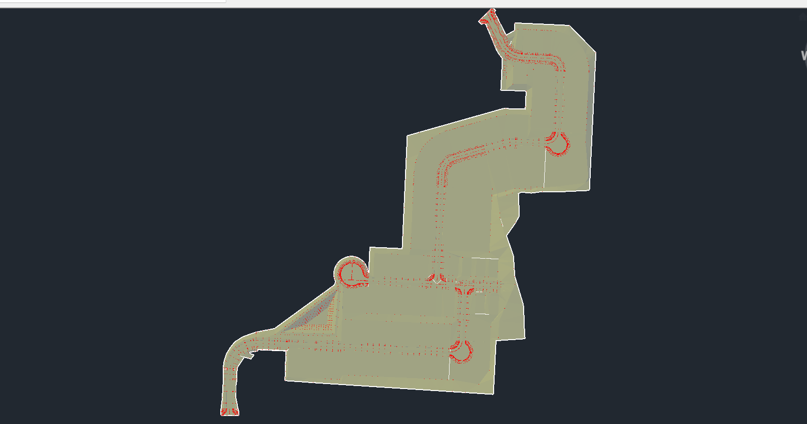
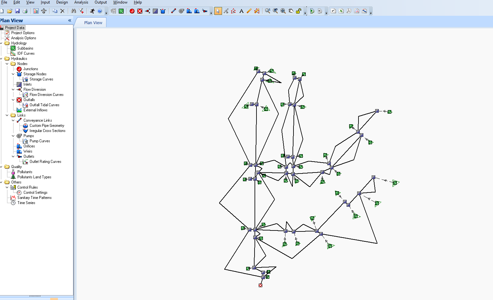
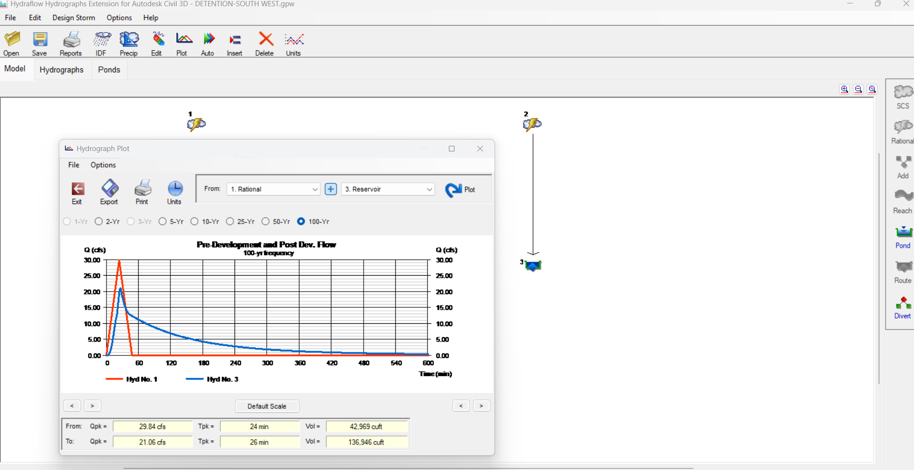
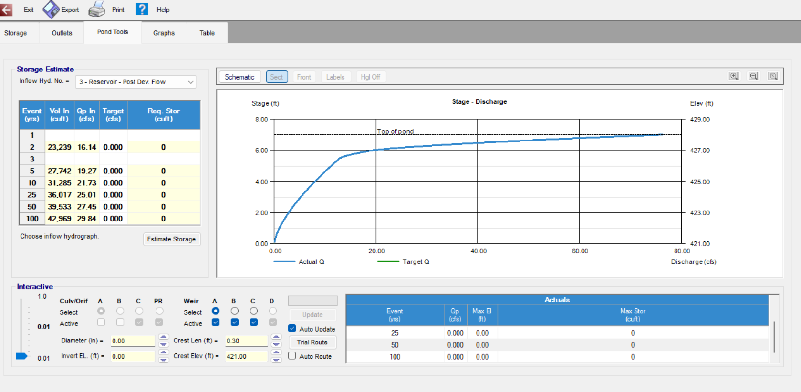
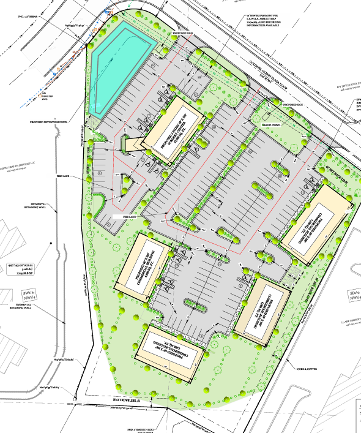

Sep 2024 – Present
Remote Land Development Engineer
Hopeconsulting · Arkansas, USA
- Completed 24+ land development projects in Benton City, Bryant and Little Rock, Arkansas, with 8+ more in progress.
- Manage grading, stormwater drainage, utilities and site development from concept through construction documents.
- Perform hydrologic and hydraulic analysis, drainage design and detention pond design.
- Prepare SWPPP and erosion control plans.
Civil 3DSSAHEC-RASQGIS
Land development projects






